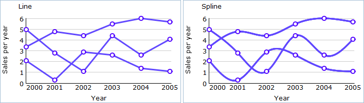

Line Chart
Line Chart is the most popular chart type. It’s created by connecting a series of data points together with a line. This chart type is used to show data trends, how parameters are related to each other or how one variable changes effected by another.
DhmlxChart gives full scope to Line chart creation as well and offers these sub-types of Line Chart:
- Line
- Spline

Let’s start to create a Line chart yourself step by step.
It will be a simple Line chart and you can improve it at any time just adding additional functions and propeties.
First, we will make some preparatory steps.
1. Specify data that will be represented in your chart. In our examples we use Sales Information of one little company in json format. Know more about available data formats.
var data = [ { sales:3.8, year:"2001" }, { sales:3.4, year:"2002" }, … { sales:4.8, year:"2009" } ];
2. Insert to your page an HTML container for your future chart e.g. with the name “chart_container” .
<div id=" chart_container" style="width:280px;height:250px;border:1px solid #A4BED4;"></div>
Go on, fill in an object constructor.
3. Set chart type depending on the sub-type you have chosen.
Line - “line”,
Spline - “spline”
We will create Line, so in the property 'view' we'll specify the value “line”.
var LineChart = new dhtmlXChart({ view:"line" .... })
4. Define value 'chart_container' in the property ‘container’ of an object constructor. It sets chart container.
var LineChart = new dhtmlXChart({ view:"line", container:"chart_container" ... })
5. Assign value '#sales#' to the ‘value’ property to set data that Line Chart will represent.
var LineChart = new dhtmlXChart({ view:"line", container:"chart_container", value:"#sales#", ... })
6. Set chart labels e.g. value '#year#' (property 'label'). Know more about chart labels here.
var LineChart = new dhtmlXChart({ view:"line", container:"chart_container", value:"#sales#", label:"#year#" ... })
7. Specify points tooltip e.g. value '#years#' (property 'tooltip'). Know more about chart tooltip here.
var LineChart = new dhtmlXChart({ view:"line", container:"chart_container", value:"#sales#", label:"#year#", tooltip: "#year#" ... })
8. Select inner and outer color of points. We will use values: '#ffffff' and '#000000' (propeties 'borderColor','color'). Know more about colors here.
var LineChart = new dhtmlXChart({ view:"line", container:"chart_container", value:"#sales#", label:"#year#", tooltip: "#year#", item:{ borderColor:"#ffffff", color:"#000000" }, ... })
9. Set color and width for a line. Our values are '#ff9900' and '3' (propeties 'color' and 'width').
var LineChart = new dhtmlXChart({ view:"line", container:"chart_container", value:"#sales#", label:"#year#", tooltip: "#year#", item:{ borderColor:"#ffffff", color:"#000000" }, line:{ color:"#ff9900", width:3 }, ... })
10. Name xAxis and choose scale data (parameter 'template'). In the example we will use the following values:'Year' as xAxis name and '#year#' as scale data. Know more about chart scale here.
var LineChart = new dhtmlXChart({ view:"line", container:"chart_container", value:"#sales#", label:"#year#", tooltip: "#year#", item:{ borderColor:"#ffffff", color:"#000000" }, line:{ color:"#ff9900", width:3 }, xAxis:{ title:"Year", template:"#year#" }, ... })
11. Name yAxis. We will use the name - “Sales per year”. Know more about chart scale here.
var LineChart = new dhtmlXChart({ view:"line", container:"chart_container", value:"#sales#", label:"#year#", tooltip: "#year#", item:{ borderColor:"#ffffff", color:"#000000" }, line:{ color:"#ff9900", width:3 }, xAxis:{ title:"Year", template:"#year#" }, yAxis:{ title:"Sales per year" }, })
12. Use method parse() to process data.
LineChart.parse(data,"json");
We've finished. Just run the application to see your creation.
The addSeries() method in details and with example.
Examples for each sub-type you can see here.